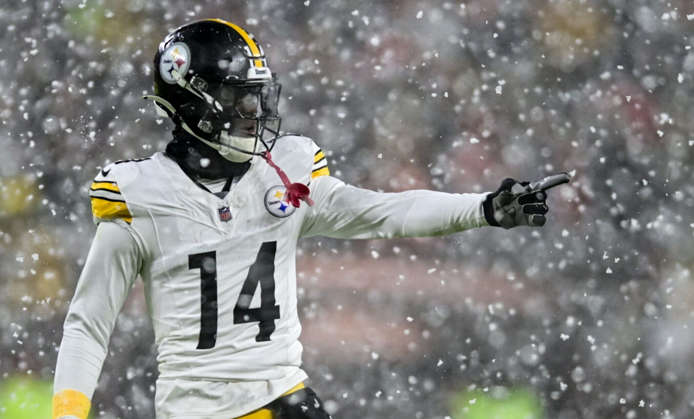

demo paragraph for demsonstration demo paragraph for demsonstration demo paragraph for demsonstration
demo paragraph for demsonstration demo paragraph for demsonstration demo paragraph for demsonstration
demo paragraph for demsonstration demo paragraph for demsonstration demo paragraph for demsonstration
I am a passionate rugby and football enthusiast who enjoys the thrill of the game both on and off the field. Currently attending BYU, I balance my academic pursuits with the joy of being married. As the middle child in a family of five, I embrace the dynamic energy and connection that comes with having siblings, making my life full of rich experiences and relationships.
The Pittsburgh Steelers have always been my favorite football team. Their legacy, grit, and determination on the field inspire me, and I love how they represent toughness and resilience. Watching their games is more than just entertainment—it's a tradition that fuels my own passion for sports. My time as a BYU rugby player has been incredibly fulfilling, both on and off the pitch. Rugby taught me discipline, teamwork, and how to push through challenges, values I carry with me in all aspects of life. Representing BYU in a sport I love has been one of my proudest achievements.

Back to Top